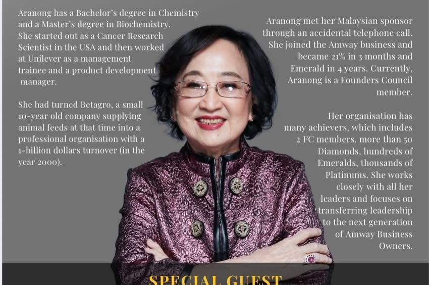
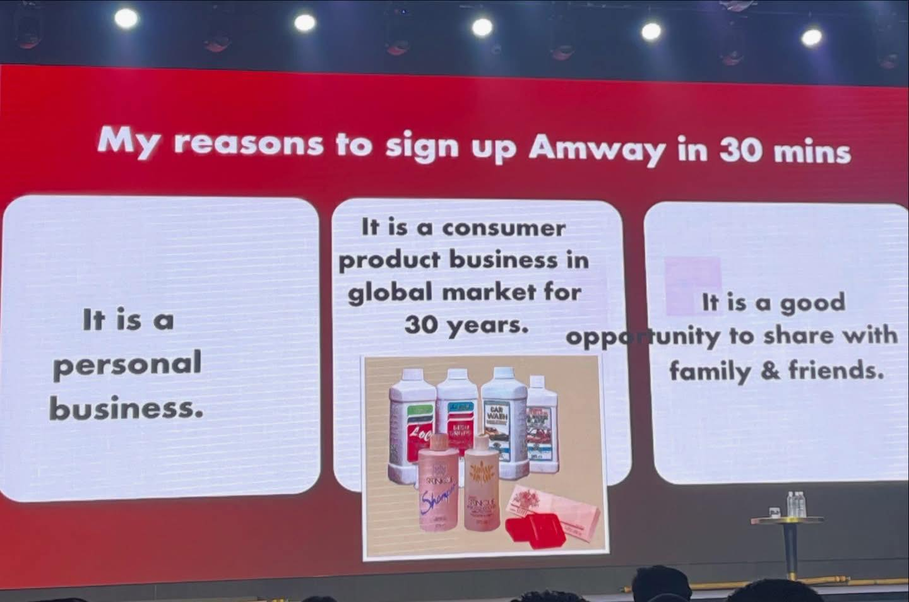
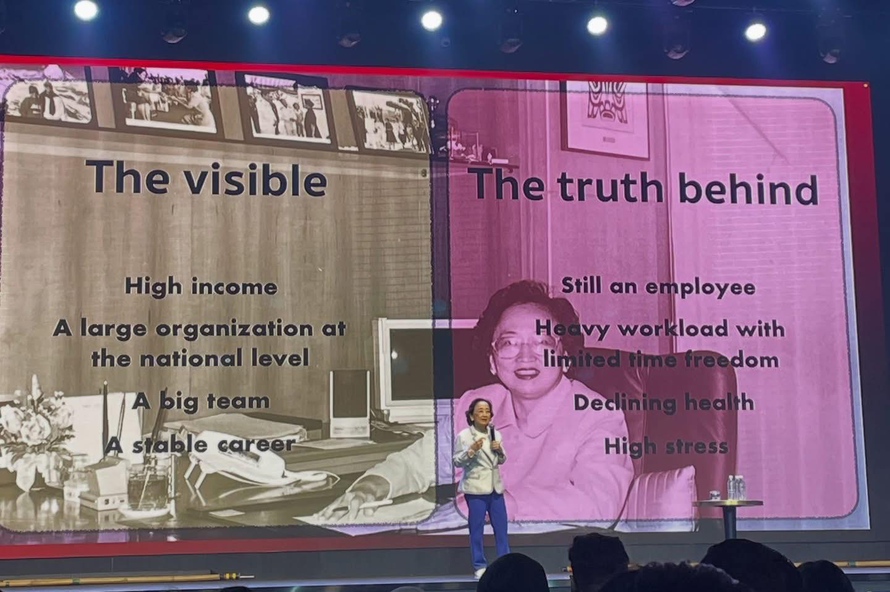

Giá trị kinh doanh Amway qua tầm nhìn của FC Aranong
"Bạn nghĩ đây không giống một cơ hội kinh doanh, nhưng đôi khi đó lại là điểm khởi đầu để người khác lật ngược cuộc đời."
Mỗi khi mình chia sẻ cơ hội này, mình thường nghe những ý kiến:- “Nghe không giống kinh doanh.”
- “Mình muốn có thương hiệu riêng.”
- “Ngành này cũ rồi.”
Những câu nói đó mình nghe rất quen. Bởi khi chưa hiểu, hầu hết cơ hội đều trông như không đáng mạo hiểm.
Cho đến khi mình nghe câu chuyện của chị ấy. Chị là ai?
- ✔ Thu nhập RM60.000/tháng (xấp xỉ 500 triệu VNĐ).
- ✔ Giám đốc điều hành của một công ty nông nghiệp niêm yết.
- ✔ Quản lý 10.000 nhân sự.
- ✔ Vận hành doanh nghiệp quy mô 1 tỷ USD.
Một người luôn ra quyết định lớn mỗi ngày, nhưng chỉ mất 30 phút để quyết định tham gia một công việc mà nhiều người chê “cũ”. Vì sao?
Chị chỉ xem xét một điều: ngành này còn tồn tại sau 10–20 năm hay không. Và chị nhìn thấy đây là ngành hàng tiêu dùng thiết yếu (FMCG): không phải xu hướng, không phải phong trào, mà là thứ được sử dụng mỗi ngày, ở mọi nơi trên thế giới.
Sau đó, chị đích thân bay sang Mỹ. Không phải để nghe kể chuyện, mà để kiểm chứng tận mắt: trụ sở công ty, nhà máy sản xuất, trang trại hữu cơ, đội ngũ quản trị. Chị quyết định dựa trên logic doanh nhân, không phải cảm xúc.Năm 1998, chị bắt đầu làm bán thời gian, rồi chuyển sang toàn thời gian. Khi đó thu nhập là RM13.000 (khoảng 100 triệu VNĐ). Bạn thử dừng lại và nghĩ: với cùng mô hình, cùng thị trường, nếu đặt vào hiện tại thì kết quả sẽ ra sao?
Giờ đây, chị gần 80 tuổi, vẫn khỏe mạnh, tự do về thời gian, đi nhiều nơi, và tiếp tục truyền cảm hứng cho người khác bằng chính trải nghiệm của mình. Mọi thứ bắt đầu từ một cuộc điện thoại gọi nhầm.Có nhiều ngành giúp bạn kiếm tiền, nhưng không phải ngành nào cũng cho bạn đồng thời:
- ✔ Sức khỏe.
- ✔ Tự do thời gian.
- ✔ Giá trị bền vững lâu dài.
Video chia sẻ thêm: